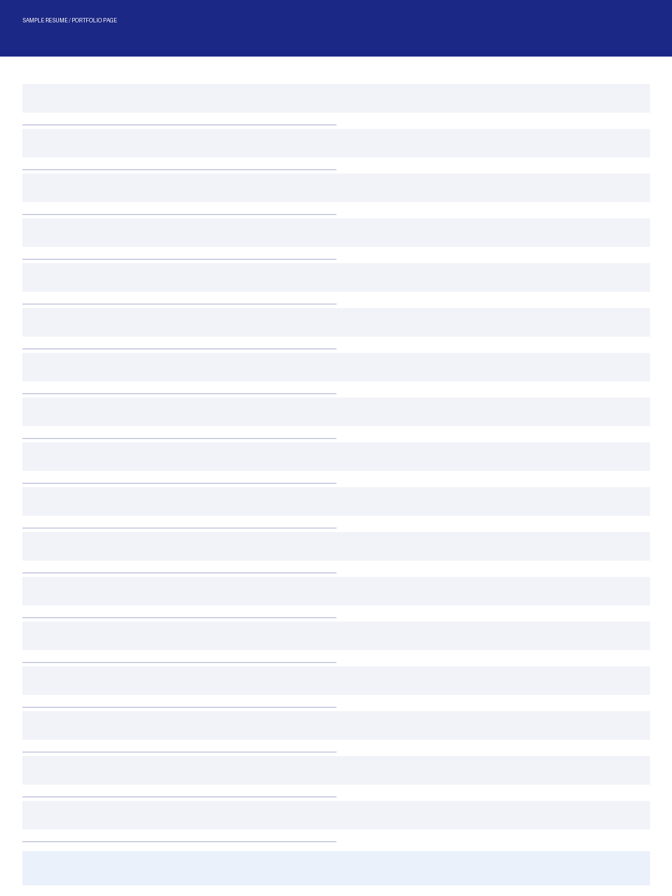

매주 연사·주제는 바뀌어도 변하지 않는 4가지 원칙.
매주 연사·주제는 바뀌어도 이 다섯 가지는 변하지 않습니다.
브랜드 네이비를 중심으로, 뉴트럴과 액센트를 최소한으로.
본문 텍스트와 강조에 쓰는 네이비 계열.
슬라이드 배경, 카드 배경, 구분선 톤.
통과·탈락·주의 등 시그널성 컬러는 제한적으로.
Pretendard 단일 서체. 두께와 크기로만 위계를 만든다.
표지·디바이더·본문 타이틀의 큰 타입.
본문·리드·카드 타이틀·캡션의 사용 영역.
슬라이드 템플릿 26종 카탈로그. 구조·본문·비교·흐름·사람·이미지·공식형·매트릭스.
본문 + 빨간색 강조 멘트로 행동을 촉구하는 마무리.
가장 기본 형태. 챕터 태그·제목·리드·불릿 0~5개.
파스텔 블루 카드. cards[]의 개수에 따라 자동 layout.
Before/After·Old/New·옵션 A/B 등 두 항목을 나란히 비교할 때.
프로세스나 단계가 있는 콘텐츠. 마지막 단계는 강조 색으로 구분.
여러 항목을 일정한 기준으로 비교할 때. 한쪽 컬럼은 강조 색으로.
여러 변화·요인을 카드로 보여주고 하단 강조 바에 한 줄 결론.
현실/이상, 문제/해결 등 강한 대비가 필요한 두 관점을 나란히.
유형이 다른 4가지 사례를 한눈에. blue↔red 교차로 시각적 변별.
: JD에 있는 요건/우대사항 내용 중심의 impact
직무·산업·기업의 다층 분기를 한 슬라이드로.

챕터·제목·리드 후 자료 이미지를 프레임 안에 배치.
알약 컨테이너 안에 원형 요소를 배치하는 공식형 템플릿. 2~4요소까지 가변.
두 요소만 깊게 매칭해도 충분히 강력합니다.
Situation, Task, Action, Result. 한 답변에 모두 담아야 합니다.
기호 매트릭스 (◎/○/△) + 행 강조 + 둥근 결론 배너. 가중치 비교에 적합.
좌·우 큰 카드, 숫자 뱃지로 단계 비교. 우측 카드에 accent.
Before/After 두 인용 박스 + 가운데 화살표 + Source 캡션.
좌측 컬러 라벨 + 가로 행 비교 + 둥근 결론 박스.
좌 PROFILE 키-값 + 우 번호 findings + 하단 Key Insight 배너.
각 템플릿은 데이터 형태가 분명할 때 가장 강력합니다. 콘텐츠가 모호하면 단순 card_grid·two_col이 더 안전합니다.